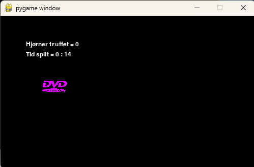

Mitt arbeid
Jeg har hatt koding som en hobby veldig lenge nå, og jeg har laget noen få prosjekter. Jeg har kodet mest i HTML, CSS, Python og Batch(systemkode). Jeg har et eksempel på mitt arbeid i HTML og CSS. Sjekk lenken nedenfor! Den nettsiden lagde jeg når jeg var 14 år gammel, så derfor har den mye utdatert info.
Nettsiden min!På nettsiden min, har jeg en fil som simulerer en DVD logo som beveger seg over skjermen. Jeg har lagt til et lite bilde under denne teksten!
Jeg har også erfaring i Blender, som er et 3D modelleringsprogram. Jeg har prøvd meg på de forskjellige verktøyene som var tilgjengelig, og jeg har greid å lage et relativt realistisk motorsykkelhjul.
Hjulet er modellert etter en Suzuki GSX R125 lettmotorsykkel, og bildet ligger nedenfor.